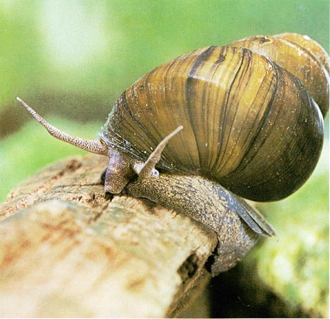
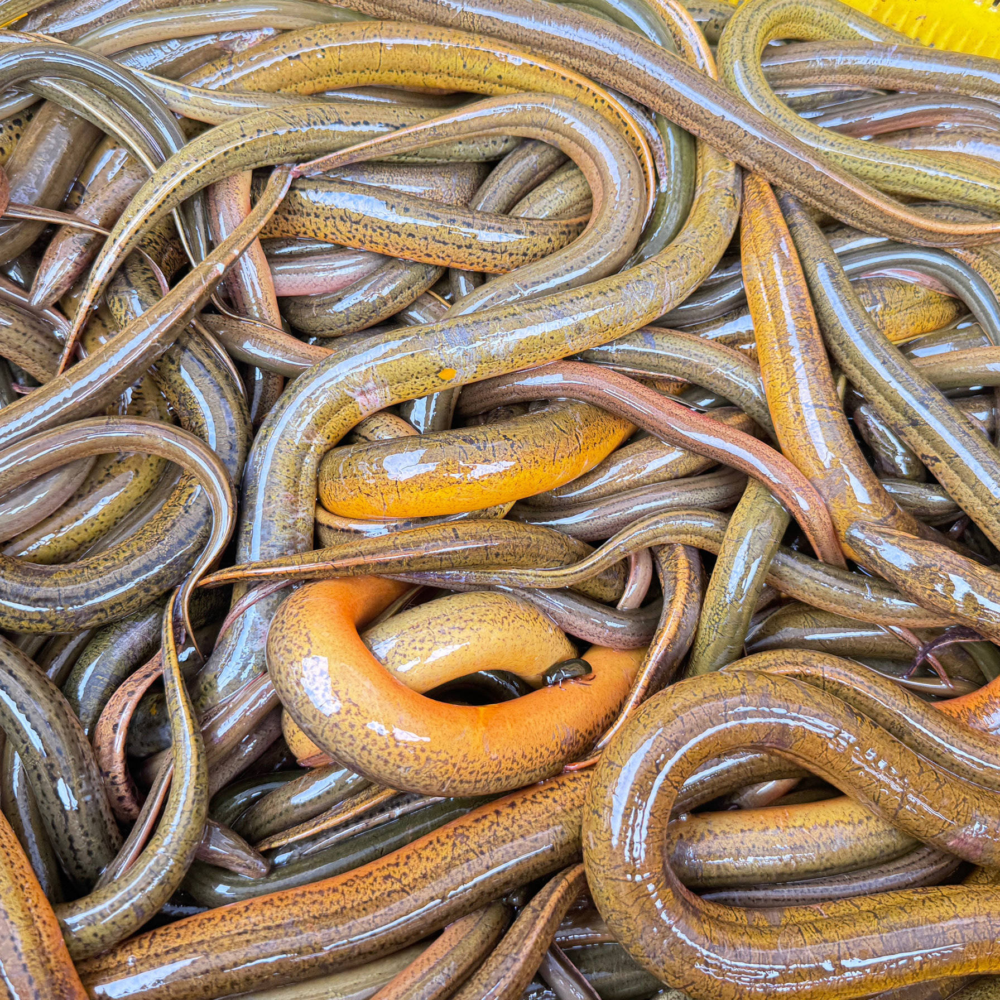
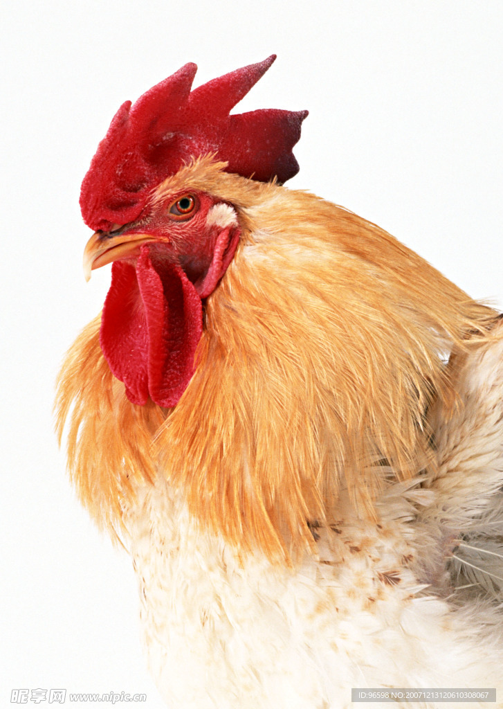
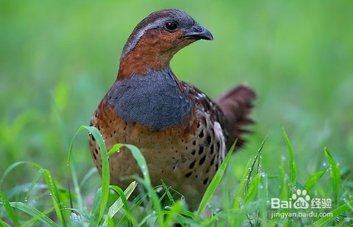
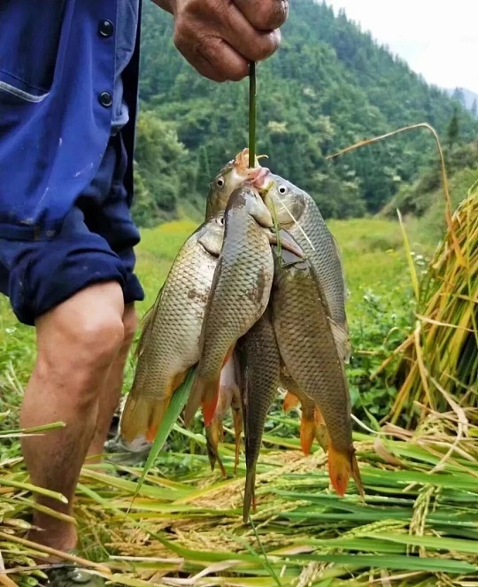
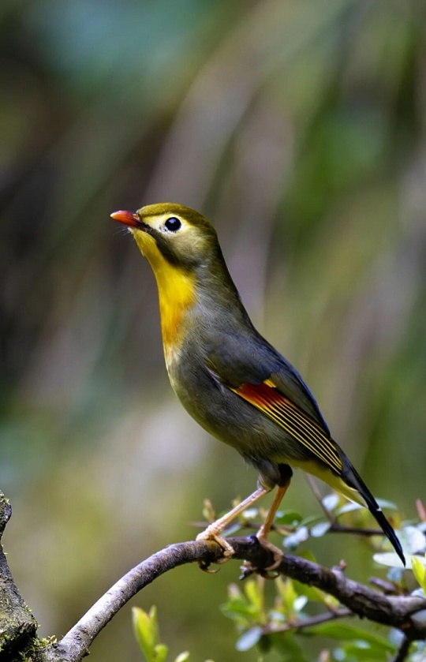
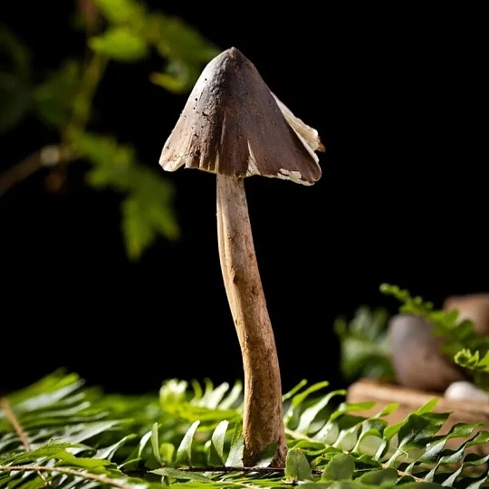
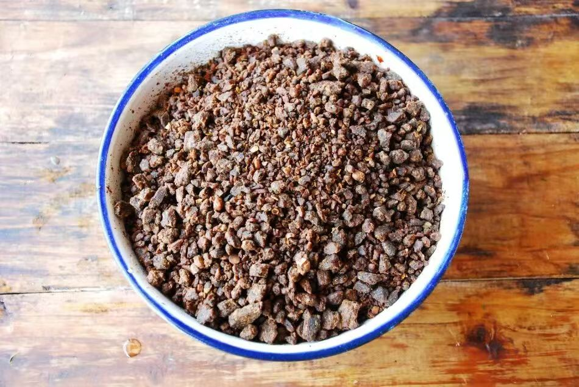
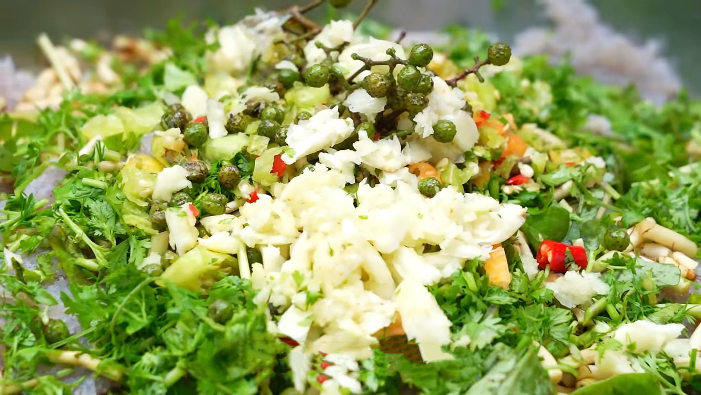
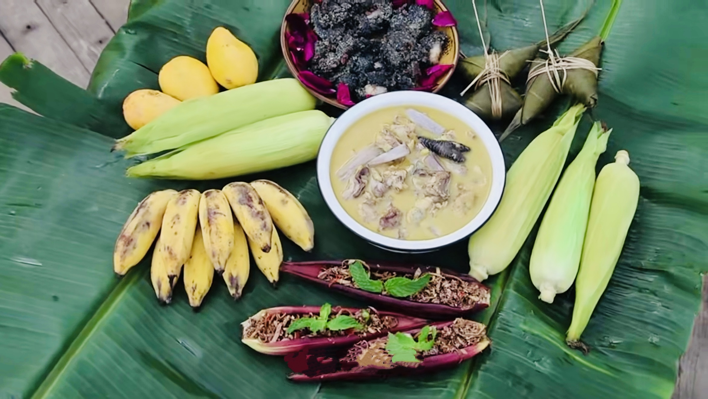

长街宴 · 信仰之味
🚫 禁忌不上席 ｜ ✅ 可上圣席
🚫 禁忌不上席

田螺淤泥环境
文化视为不洁
文化视为不洁

黄鳝形态模糊
不合神圣秩序
不合神圣秩序

家鸡日常祭品
庄重性不足
庄重性不足
 家鸭
家鸭日常家禽
不入寨神圣宴
不入寨神圣宴
 狗肉
狗肉驱鬼用途
排除于感恩祭
排除于感恩祭
 家猪
家猪非祭祀龙猪
未被祝祷
未被祝祷
✅ 可上圣席

竹鸡 / 山鸡山林野性
寨神喜爱祭品
寨神喜爱祭品

梯田鱼稻鱼共生
四素同构结晶
四素同构结晶

鸟类山林生长
自然馈赠
自然馈赠
 蜂蛹
蜂蛹悬崖采集
稀缺与勇气
稀缺与勇气
 鹌鹑蛋
鹌鹑蛋梯田环境
自然孕育
自然孕育

野生菌山林自生
自然珍品
自然珍品
"唯有来自山林与梯田的『自然珍馐』
方具资格登上寨神圣宴。"
方具资格登上寨神圣宴。"
哈尼族长街宴
十二道风味图谱 · 农耕智慧与味觉记忆

春 · 秋
七彩糯米饭
【劳作：插秧 / 收割】红、紫、黄、白、黑五色交织，源自植物染料。是长街宴上最耀眼的视觉中心，象征着五谷丰登。

夏 · 秋
梯田鱼
【劳作：稻田养鱼】利用梯田生态系统，稻鱼共生。肉质鲜美，汤汁浓郁，体现了“一水两用”的生态智慧。

全 年
蘸水鸡
【劳作：山林放养】散养土鸡，肉质紧实。配以秘制蘸料，鲜香麻辣，是长街宴上不可或缺的开胃大菜。

春 · 秋
油炸蜂蛹
【劳作：山林管护】高蛋白的森林馈赠。金黄酥脆，香气扑鼻，展现了哈尼人对山林资源的极致利用。

春 · 秋
焖锅酒
【劳作：谷物种植+酿酒】红米酿造，醇厚甘甜。不仅是饮品，更是哈尼族节庆祭祀中沟通天地的神圣媒介。

全 年
牛干巴
【劳作：畜牧养殖+加工】黄牛肉腌制风干，咸香有嚼劲。切片煎炒，油而不腻，是哈尼族待客的上等佳肴。

秋 季
油炸竹虫
【劳作：竹林管护】竹虫富含蛋白质，口感酥脆。这是哈尼族“靠山吃山”的极致体现，勇敢者的美味。

春 · 秋
哈尼豆豉
【劳作：大豆种植+发酵】大豆发酵的结晶，独特的豉香是哈尼古菜的“灵魂”，提味增鲜，回味无穷。

秋 · 冬
凉拌魔芋
【劳作：作物种植+加工】魔芋种植收获后制成粉，口感爽滑Q弹，凉拌食用，是解腻开胃的佳品。

夏 · 秋
芭蕉宴
【劳作：果树管护+采摘】芭蕉树的全身都是宝。从果实到花蕊，再到宽大的叶片（用作天然餐具），充满了热带雨林的风情。

全 年
豆腐圆子
【劳作：大豆种植+发酵】大豆磨浆点卤，手工捏制成型。外皮微焦，内里嫩滑，清淡中透着豆香，老少皆宜。

秋 · 冬
糯米血肠
【劳作：谷物种植+畜牧养殖】猪血混合糯米灌入肠衣，风味浓郁独特，是哈尼人祭祀祖先、款待贵宾的重要供品。